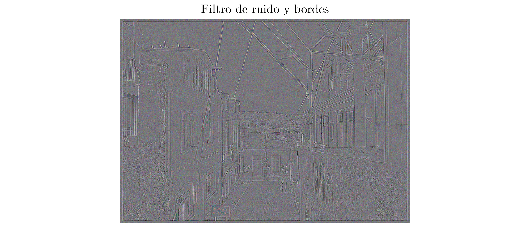

Contents
- Codigos de ejemplo
- 1. Filtros en frecuencia
- 1.1 Filtro Butterworth pasa bajos
- 1.2 Filtro Gaussiano
- 1.3 Filtro Butterworth pasa altos
- 1.4 Filtro Gaussiano pasa altos
- 1.5 Laplaciano
- 1.6 Filtro de enfasis
- 1.7 Butterworth rechaza banda
- 1.8 Filtro homomorfico
- 1.9 Filtro de Wiener
- 1.10 Ejemplo rapido de disenno Filtro para ruido y bordes
- 2. Segmentacion
- 2.1 Segmentacion con filtro de bordes
- 2.2 Segmentacion de color - Malahanobis
- Segmentacion en frecuencia
- 3. Relleno de imagen
- Funciones
Codigos de ejemplo
Mathias Lambert V.(c) IEE2712, 2020-1
clc; clear; close all; set(0, 'DefaultFigureWindowStyle', 'docked');
1. Filtros en frecuencia
im = double(imread('im1.jpg')); im2 = im + randn(size(im)) * max(im(:))*5/100; figure(1); imshow([normalizar(im) normalizar(im2)]); title('Imagen original \qquad \qquad \qquad \qquad \qquad \qquad \qquad Imagen con ruido', 'Interpreter', 'latex', 'FontSize', 30);
1.1 Filtro Butterworth pasa bajos
[M, N, ~] = size(im2); [y, x] = meshgrid(1:N, 1:M); r = ((x - M/2).^2 + (y - N/2).^2).^.5; butterworth = @(r0, n) 1./(1+(r/r0).^(2*n)); r0 = 60; % radio n = 1; % orden figure(2); figure(3); for n = 1:4 figure(2); subplot(2,2,n); filtro = butterworth(r0, n); mesh(filtro); title(['Orden ', num2str(n)], 'Interpreter', 'latex', 'FontSize', 20); imf = zeros(size(im2)); for i = 1:3 aux = fftshift(fft2(im2(:,:,i))); imf(:,:,i) = real(ifft2(ifftshift(aux.*filtro))); end figure(3); subplot(2,2,n); imshow(normalizar(imf)); title(['Resultado filtro Orden ', num2str(n)], 'Interpreter', 'latex', 'FontSize', 20); end figure(2); l = suptitle('Filtro de Butterworth'); set(l, 'Interpreter', 'latex', 'FontSize', 40); figure(3); l = suptitle('Filtro de Butterworth'); set(l, 'Interpreter', 'latex', 'FontSize', 40);
Warning: The initial magnification of the image is set to 'fit' in a docked figure. Warning: The initial magnification of the image is set to 'fit' in a docked figure. Warning: The initial magnification of the image is set to 'fit' in a docked figure. Warning: The initial magnification of the image is set to 'fit' in a docked figure.
1.2 Filtro Gaussiano
gaussiano = @(r0) exp((-r.^2)/(2*r0.^2)); figure(4); figure(5); k = 1; for r0 = 10:20:70 figure(4); subplot(2,2,k); filtro = gaussiano(r0); mesh(filtro); title(['Radio ', num2str(r0)], 'Interpreter', 'latex', 'FontSize', 20); imf = zeros(size(im2)); for i = 1:3 aux = fftshift(fft2(im2(:,:,i))); imf(:,:,i) = real(ifft2(ifftshift(aux.*filtro))); end figure(5); subplot(2,2,k); imshow(normalizar(imf)); title(['Resultado filtro Radio ', num2str(r0)], 'Interpreter', 'latex', 'FontSize', 20); k = k + 1; end figure(4); l = suptitle('Filtro de Gaussiano'); set(l, 'Interpreter', 'latex', 'FontSize', 40); figure(5); l = suptitle('Filtro de Gaussiano'); set(l, 'Interpreter', 'latex', 'FontSize', 40);
Warning: The initial magnification of the image is set to 'fit' in a docked figure. Warning: The initial magnification of the image is set to 'fit' in a docked figure. Warning: The initial magnification of the image is set to 'fit' in a docked figure. Warning: The initial magnification of the image is set to 'fit' in a docked figure.
1.3 Filtro Butterworth pasa altos
butterworth2 = @(r0, n) 1./(1+(r0./r).^(2*n)); r0 = 60; % radio n = 1; % orden figure(6); figure(7); for n = 1:4 figure(6); subplot(2,2,n); filtro = butterworth2(r0, n); mesh(filtro); title(['Orden ', num2str(n)], 'Interpreter', 'latex', 'FontSize', 20); imf = zeros(size(im2)); for i = 1:3 aux = fftshift(fft2(im2(:,:,i))); imf(:,:,i) = real(ifft2(ifftshift(aux.*filtro))); end figure(7); subplot(2,2,n); imshow(normalizar(imf)); title(['Resultado filtro Orden ', num2str(n)], 'Interpreter', 'latex', 'FontSize', 20); end figure(6); l = suptitle('Filtro de Butterworth pasa altos'); set(l, 'Interpreter', 'latex', 'FontSize', 40); figure(7); l = suptitle('Filtro de Butterworth pasa altos'); set(l, 'Interpreter', 'latex', 'FontSize', 40);
Warning: The initial magnification of the image is set to 'fit' in a docked figure. Warning: The initial magnification of the image is set to 'fit' in a docked figure. Warning: The initial magnification of the image is set to 'fit' in a docked figure. Warning: The initial magnification of the image is set to 'fit' in a docked figure.
1.4 Filtro Gaussiano pasa altos
gaussiano2 = @(r0) 1 - exp((-r.^2)/(2*r0.^2)); figure(8); figure(9); k = 1; for r0 = 10:20:70 figure(8); subplot(2,2,k); filtro = gaussiano2(r0); mesh(filtro); title(['Radio ', num2str(r0)], 'Interpreter', 'latex', 'FontSize', 20); imf = zeros(size(im2)); for i = 1:3 aux = fftshift(fft2(im2(:,:,i))); imf(:,:,i) = real(ifft2(ifftshift(aux.*filtro))); end figure(9); subplot(2,2,k); imshow(normalizar(imf)); title(['Resultado filtro Radio ', num2str(r0)], 'Interpreter', 'latex', 'FontSize', 20); k = k + 1; end figure(8); l = suptitle('Filtro de Gaussiano pasa altos'); set(l, 'Interpreter', 'latex', 'FontSize', 40); figure(9); l = suptitle('Filtro de Gaussiano pasa altos'); set(l, 'Interpreter', 'latex', 'FontSize', 40);
Warning: The initial magnification of the image is set to 'fit' in a docked figure. Warning: The initial magnification of the image is set to 'fit' in a docked figure. Warning: The initial magnification of the image is set to 'fit' in a docked figure. Warning: The initial magnification of the image is set to 'fit' in a docked figure.
1.5 Laplaciano
laplaciano = -4 * pi^2 * r.^2; imf = zeros(size(im)); for i = 1:3 aux = fftshift(fft2(im(:,:,i))); imf(:,:,i) = real(ifft2(ifftshift(aux.*laplaciano))); end figure(10); imshow(normalizar(imf)); title('Laplaciano', 'Interpreter', 'latex', 'FontSize', 40);
Warning: The initial magnification of the image is set to 'fit' in a docked figure.
1.6 Filtro de enfasis
enfasis = @(k1, k2, filtro) k1 + k2*filtro; % k1, k2 > 0 f = butterworth2(60, 1); filtro = enfasis(0.5,1,f); imf = zeros(size(im)); for i = 1:3 aux = fftshift(fft2(im(:,:,i))); imf(:,:,i) = real(ifft2(ifftshift(aux.*filtro))); end figure(11); imshow(normalizar(imf)); title('Filtro enfasis', 'Interpreter', 'latex', 'FontSize', 40);
Warning: The initial magnification of the image is set to 'fit' in a docked figure.
1.7 Butterworth rechaza banda
butterworth3 = @(r1, r0, n) 1./(1+((r*r1./(r.^2-r0^2))).^(2*n)); r1 = [100, 200, 250, 300]; r0 = [30, 100, 150, 200]; figure(12); figure(13); for i = 1:4 figure(12); subplot(2,2,i); filtro = butterworth3(r1(i), r0(i), 1); mesh(filtro); title(['r1: ', num2str(r1(i)), ' r0: ', num2str(r0(i))], 'Interpreter', 'latex', 'FontSize', 20); imf = zeros(size(im2)); for j = 1:3 aux = fftshift(fft2(im2(:,:,j))); imf(:,:,j) = real(ifft2(ifftshift(aux.*filtro))); end figure(13); subplot(2,2,i); imshow(normalizar(imf)); title(['Resultado, r1: ', num2str(r1(i)), ' r0: ', num2str(r0(i))], 'Interpreter', 'latex', 'FontSize', 20); end figure(12); l = suptitle('Filtro de Butterworth rechaza banda'); set(l, 'Interpreter', 'latex', 'FontSize', 40); figure(13); l = suptitle('Filtro de Butterworth rechaza banda'); set(l, 'Interpreter', 'latex', 'FontSize', 40);
Warning: The initial magnification of the image is set to 'fit' in a docked figure. Warning: The initial magnification of the image is set to 'fit' in a docked figure. Warning: The initial magnification of the image is set to 'fit' in a docked figure. Warning: The initial magnification of the image is set to 'fit' in a docked figure.
1.8 Filtro homomorfico
imf = zeros(size(im2)); yh = 0.5; yl = 0.3; h = butterworth2(30, 1); % filtro pasa altos filtro = (yh - yl)*h +yl; for j = 1:3 aux = fftshift(fft2(log(im(:,:,j)+1))); imf(:,:,j) = real(ifft2(ifftshift(aux.*filtro))); imf(:,:,j) = imf(:,:,j) - min(min(imf(:,:,j))) + 1; imf(:,:,j) = exp(imf(:,:,j)); end figure(14); imshow(normalizar(imf)); title('Filtro homomorfico', 'Interpreter', 'latex', 'FontSize', 40);
Warning: The initial magnification of the image is set to 'fit' in a docked figure.
1.9 Filtro de Wiener
f = butterworth(30, 1); im3 = zeros(size(im2)); for j = 1:3 aux = fftshift(fft2(im(:,:,j))); im3(:,:,j) = real(ifft2(ifftshift(aux.*f))) + randn(size(aux))*10; end figure(15); imshow(normalizar(im3)); title('Input Filtro de Wiener', 'Interpreter', 'latex', 'FontSize', 40); af = abs(f).^2; wiener = @(k) (1./(f+eps)) .* (af./(af+k+eps)); filtro = wiener(0.08); imf = zeros(size(im3)); for j = 1:3 aux = fftshift(fft2(im3(:,:,j))); imf(:,:,j) = real(ifft2(ifftshift(aux.*filtro))); end figure(16); imshow(normalizar(imf)); title('Filtro de Wiener', 'Interpreter', 'latex', 'FontSize', 40);
Warning: The initial magnification of the image is set to 'fit' in a docked figure. Warning: The initial magnification of the image is set to 'fit' in a docked figure.
1.10 Ejemplo rapido de disenno Filtro para ruido y bordes
filtro = (1 - butterworth3(60, 30, 1)) .* butterworth2(100, 1) .* (laplaciano) .* gaussiano2(50); for j = 1:3 aux = fftshift(fft2(im2(:,:,j))); imf(:,:,j) = real(ifft2(ifftshift(aux.*filtro))); end figure(17); mesh(filtro); title('Filtro de ruido y bordes', 'Interpreter', 'latex', 'FontSize', 40); figure(18); imshow(normalizar(imf)); title('Filtro de ruido y bordes', 'Interpreter', 'latex', 'FontSize', 40);
Warning: The initial magnification of the image is set to 'fit' in a docked figure.
2. Segmentacion
clear; clc;
2.1 Segmentacion con filtro de bordes
im = double(imread('coins.png')); figure; imshow(im,[]); hold on; title('Imagen de entrada', 'Interpreter', 'latex', 'FontSize', 30); % kernel radial para bordes circulares r = 29; N = fix(2*r + 1.5); [x, y] = meshgrid(1:N, 1:N); kernel = sqrt((x-N/2).^2 + (y-N/2).^2) < 29; kernel = kernel / sum(kernel(:)); % aplicacion kernel circular imf = conv2(im, kernel, 'same'); % segunda derivada imf = conv2(imf, [0 1 0;1 -4 1;0 1 0], 'same'); % umbral imf = abs(imf)>0.6; imf = imclearborder(imf); % elminacion pequennas areas imf = bwareaopen(imf, 30); % etiquetamos las areas [L,n] = bwlabel(imf); mask = zeros(size(im)); [a,b] = size(im); [x, y] = meshgrid(1:b, 1:a); for i = 1:n % localizamos centros [ii, jj] = find(L==i); xx = round(mean(ii)); yy = round(mean(jj)); plot(yy, xx, 'o','MarkerFaceColor', 'r'); % ajustamos radio rm = 10; while im(xx, yy-rm) > 100 rm = rm + 1; end mask = mask + double(sqrt((x-yy).^2 + (y-xx).^2) < rm); end figure; imshow(mask, []); title('Mascara', 'Interpreter', 'latex', 'FontSize', 30); figure; imshow(mask.*im, []); title('Segmentaci\''on', 'Interpreter', 'latex', 'FontSize', 30);
Warning: The initial magnification of the image is set to 'fit' in a docked figure. Warning: The initial magnification of the image is set to 'fit' in a docked figure. Warning: The initial magnification of the image is set to 'fit' in a docked figure.
2.2 Segmentacion de color - Malahanobis
im = imread('im3.jpg'); figure; imshow(im); title('Imagen de entrada (Selecciona 10 puntos de color)', 'Interpreter', 'latex', 'FontSize', 30); colores = []; for i = 1:10 [ii, jj] = ginput(1); x = round(ii); y = round(jj); color = squeeze(im(y,x,:)); colores = [colores,color]; end title('Imagen de entrada ', 'Interpreter', 'latex', 'FontSize', 30); colores = double(colores); figure; imshow(meshgrid(1:10), colores'/255); title('Colores seleccionados', 'Interpreter', 'latex', 'FontSize', 30); % Distancia de mahalanobis mask = zeros(size(im,1), size(im,2)); icovar = inv(cov(colores')); icovar = icovar / max(icovar(:)); prom = sum(colores, 2)/10; h = 0.1; for i = 1:size(im,1) for j = 1:size(im,2) pixel = double(squeeze(im(i, j, :))); dist = (pixel - prom)' * icovar * (pixel - prom); mask(i,j) = dist; end end figure; imshow(mask, []); title('Imagen de distancia', 'Interpreter', 'latex', 'FontSize', 30); mask = mask<100; figure; imshow(mask, []); title('Mascara', 'Interpreter', 'latex', 'FontSize', 30); figure; imshow(uint8(mask.*double(im))); title('Imagen Segmentada', 'Interpreter', 'latex', 'FontSize', 30);
Warning: The initial magnification of the image is set to 'fit' in a docked figure. Warning: The initial magnification of the image is set to 'fit' in a docked figure. Warning: The initial magnification of the image is set to 'fit' in a docked figure. Warning: The initial magnification of the image is set to 'fit' in a docked figure. Warning: The initial magnification of the image is set to 'fit' in a docked figure.
Segmentacion en frecuencia
venado = imread('im2.png'); im = venado(:,: ,3)-venado(:,:,1); figure; imshow(im, []); title('Imagen a utilizar', 'Interpreter', 'latex', 'FontSize', 30); fft = fftshift(fft2(im)); figure; imshow(log(abs(fft))+1,[]) title('FFT', 'Interpreter', 'latex', 'FontSize', 30) [N, M] = size(im); [col, row] = meshgrid(1:N, 1:M); circulos = ((col - M/2).^2 + (row - N/2).^2).^.5; n = 20; D0 = 30; D1 = 100; % filtro Butterworth filtr = (1./(1+(circulos./D0).^(2*n))); f2 = (1./(1+(circulos./D1).^(2*n))); filtro = (-filtr + f2); figure; imshow(log(abs(fft.*filtro))+1,[]) title('FFT filtada', 'Interpreter', 'latex', 'FontSize', 30) vg2 = ifft2(ifftshift(fft.* filtro)); vg2 = uint8(real(vg2)); b = vg2 > 2; b = bwareaopen(b, 200); b(635:1024, :) = 0; figure; imshow(b) title('Mascara Parte de la Reja', 'Interpreter', 'latex', 'FontSize', 30)
Warning: The initial magnification of the image is set to 'fit' in a docked figure. Warning: The initial magnification of the image is set to 'fit' in a docked figure. Warning: The initial magnification of the image is set to 'fit' in a docked figure. Warning: The initial magnification of the image is set to 'fit' in a docked figure.

3. Relleno de imagen
Para completar los datos faltantes, utilizo un modelo de probabilidades normal, en el cual en primera instancia se recorre la imagen mediante una ventana de 4x4 buscando 0's y luego se rellenan esos espacios segun un numero aleatorio correspondiente a la distribucion normal de la ventana(datos de la ventana sin considerar los 0). Luego como la reja es mas gruesa que 4x4 existe parte de ella que no es eliminada, por lo cual se recorre nuevamente con una ventana de 8x8.
figure; faltan_datos = venado.*uint8(~imdilate(b,1)); imshow(faltan_datos) title('Imagen con datos faltantes', 'Interpreter', 'latex', 'FontSize', 30) for iii = 1:3 divisiones = 256; salto = N/divisiones - 1; for i = 1:N/divisiones:N-1 for j = 1:M/divisiones:M-1 mu = media(faltan_datos(i:i+salto, j:j+salto, iii)); sigma = sd(faltan_datos(i:i+salto, j:j+salto, iii), mu); for k = i:salto+i for kk = j:salto+j if faltan_datos(k, kk, iii) == 0 faltan_datos(k, kk, iii) = normrnd(mu,sigma); end end end end end divisiones = 128; salto = N/divisiones - 1; for i = 1:N/divisiones:N-1 for j = 1:M/divisiones:M-1 mu = media(faltan_datos(i:i+salto, j:j+salto, iii)); sigma = sd(faltan_datos(i:i+salto, j:j+salto, iii), mu); for k = i:salto+i for kk = j:salto+j if faltan_datos(k, kk, iii) == 0 faltan_datos(k, kk, iii) = normrnd(mu,sigma); end end end end end end figure; imshow(faltan_datos) title('Imagen Recontruida', 'Interpreter', 'latex', 'FontSize', 30)
Warning: The initial magnification of the image is set to 'fit' in a docked figure. Warning: The initial magnification of the image is set to 'fit' in a docked figure.
Funciones
function [y] = normalizar(im) y = zeros(size(im), 'uint8'); for i = 1:3 x = im(:,:,i); y(:,:,i) = uint8(255*(x-min(x(:)))/(max(x(:))-min(x(:)))); end end function m = media(a) cantidad = 0; suma = 0; [N, M] = size(a); for ii = 1:N for jj = 1:M if a(ii, jj) ~= 0 cantidad = cantidad + 1; suma = suma + double(a(ii, jj)); end end end m = suma/cantidad; end function s = sd(a, u) suma = 0; cantidad = 0; [N, M] = size(a); for i = 1:N for j = 1:M if a(i, j) ~= 0 cantidad = cantidad + 1; suma = suma + (double(a(i, j)) - u).^2; end end end s = sqrt((1/(cantidad - 1))*suma); end
Warning: The initial magnification of the image is set to 'fit' in a docked figure.